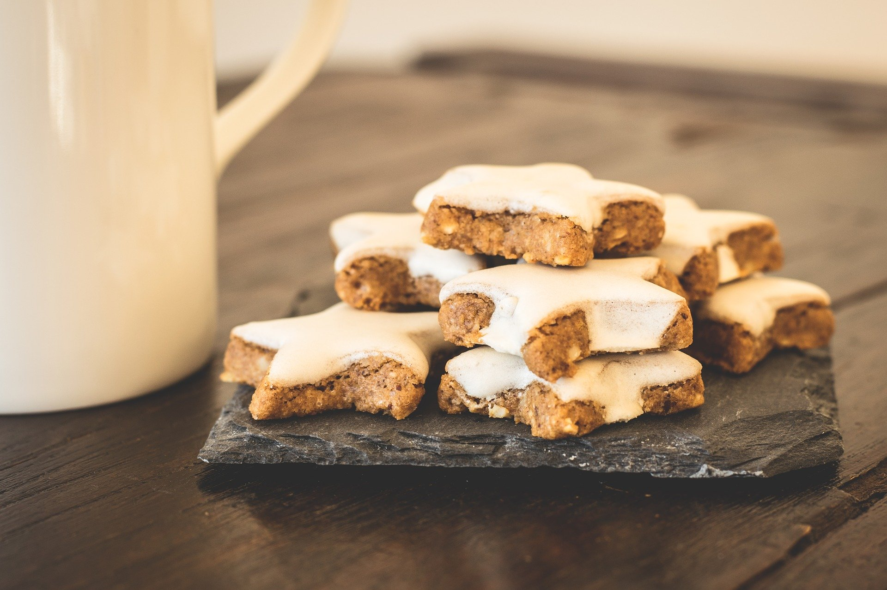
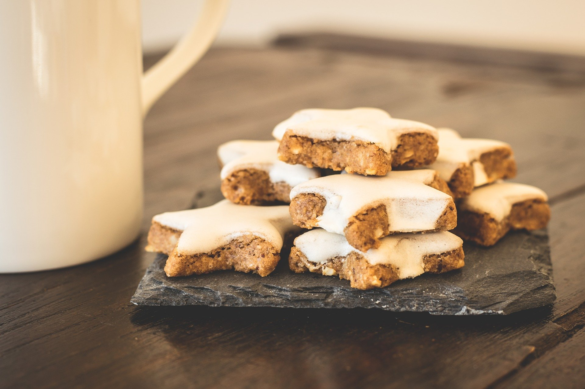
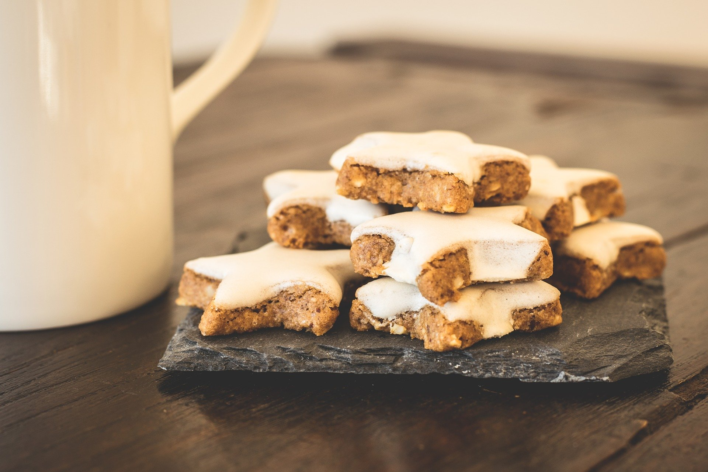
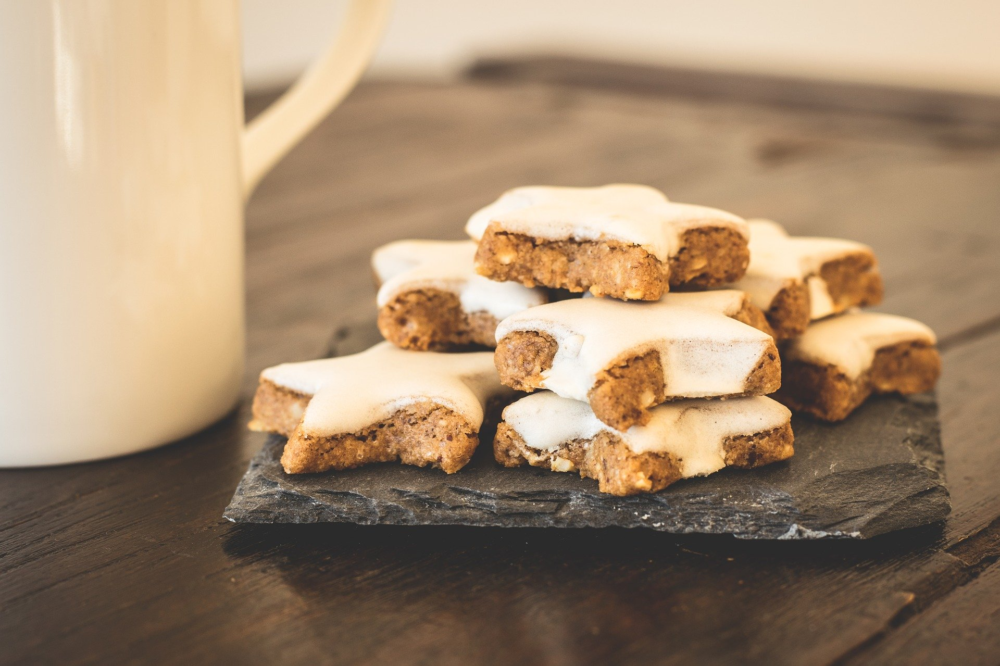
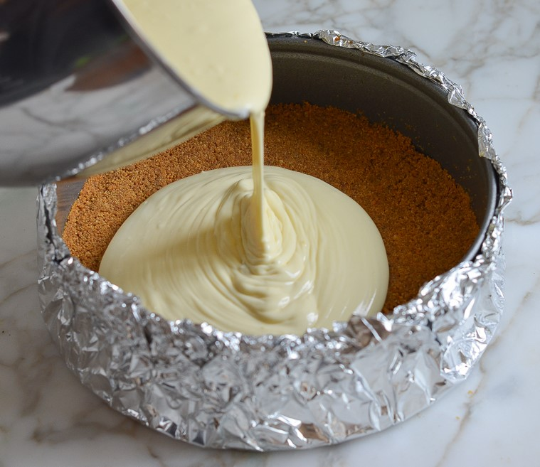
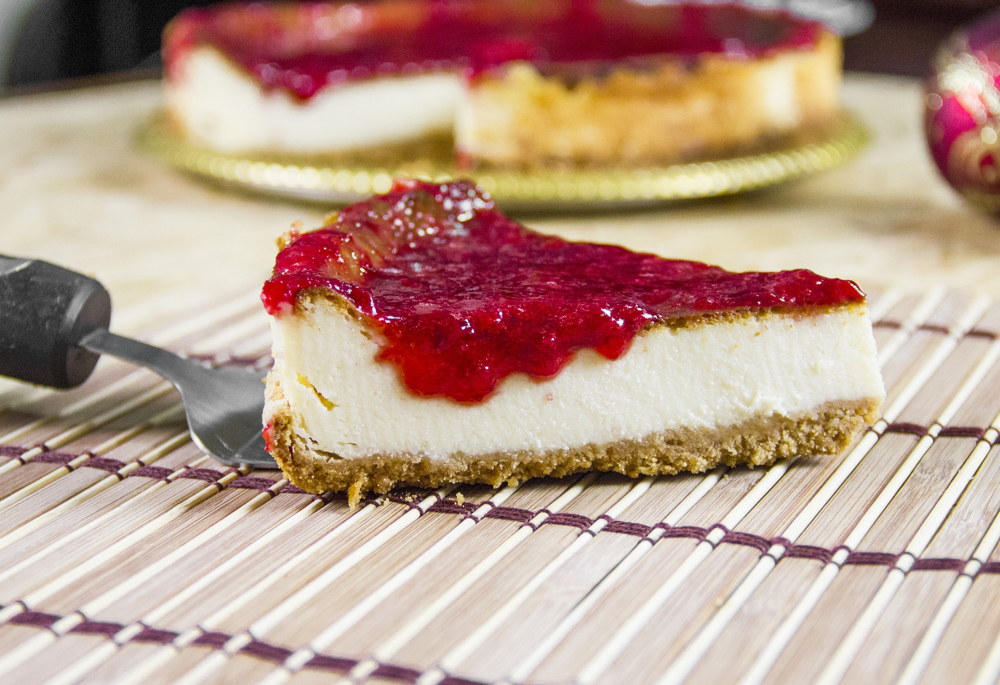
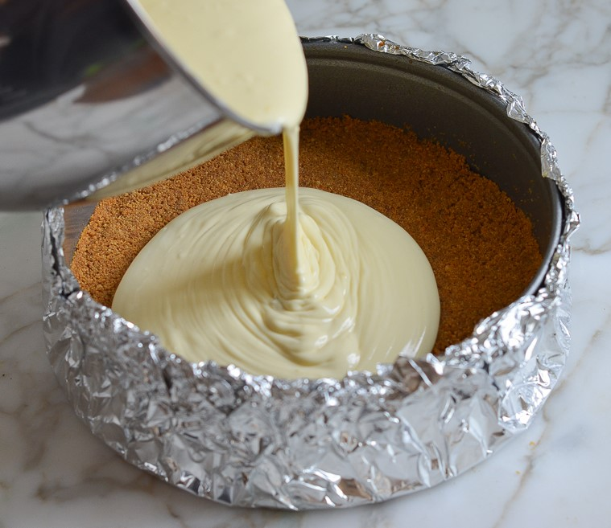
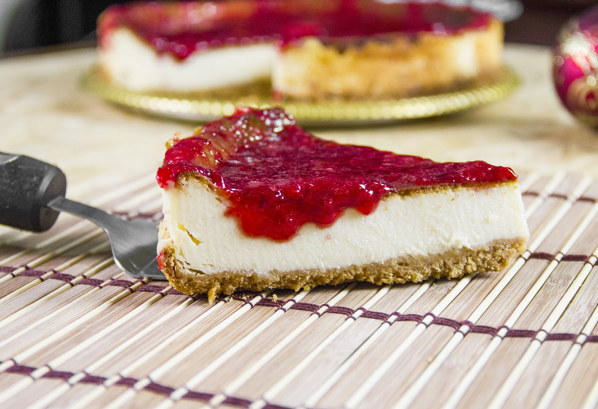

 

Ingredients for Cheesecake
Preheat oven to 325° and grease an 9 inch pan with cooking spray. In a large bowl, mix together graham cracker crumbs, melted butter, sugar, and salt until totally combined. Press into bottom and up sides of prepared pan. Set aside. In a large bowl using a hand mixer (or in the bowl of a stand mixer), beat cream cheese and sugar until no lumps remain. Add eggs, one at a time, then stir in vanilla and sour cream. Add flour and salt and beat until just combined. Pour mixture over crust. Wrap bottom of pan in aluminum foil and place in a large roasting pan. Pour in enough boiling water to come up halfway in the baking pan. Bake until center of cheesecake only slightly jiggles, about 1 hour 30 minutes. Turn off heat, prop open oven door, and let cheesecake cool in oven, 1 hour. Remove foil and refrigerate cheesecake until completely chilled, at least 5 hours and up to overnight.
 


